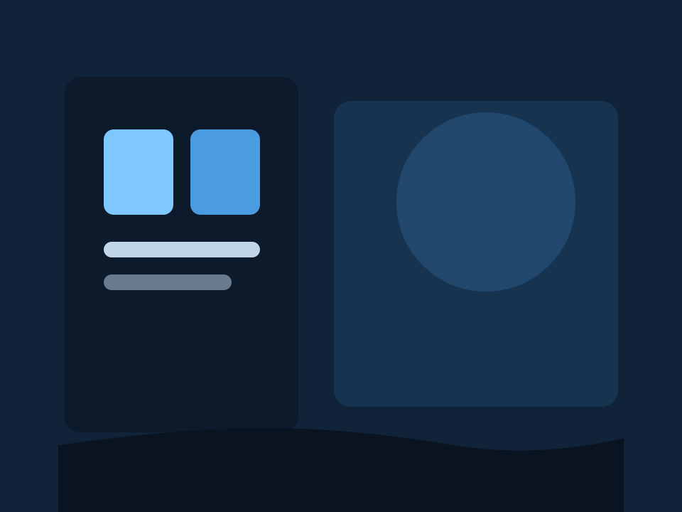
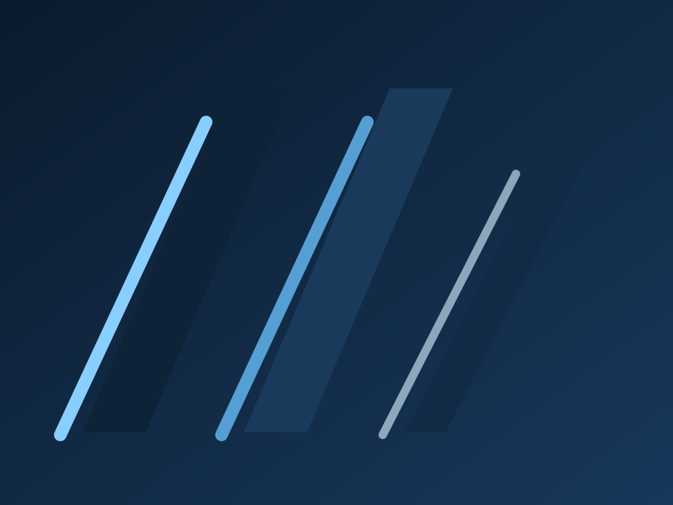
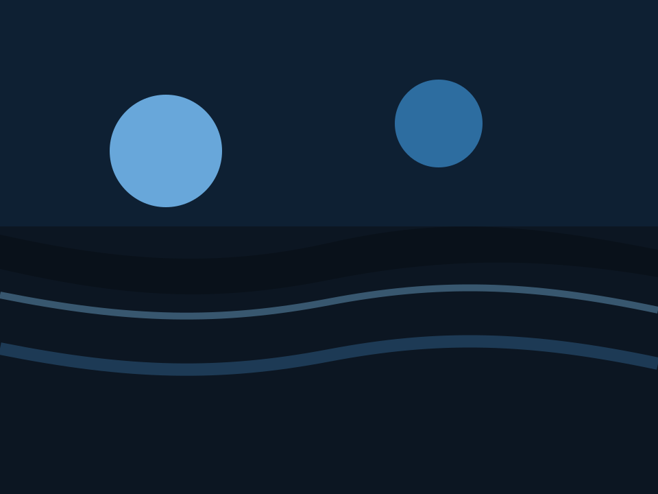
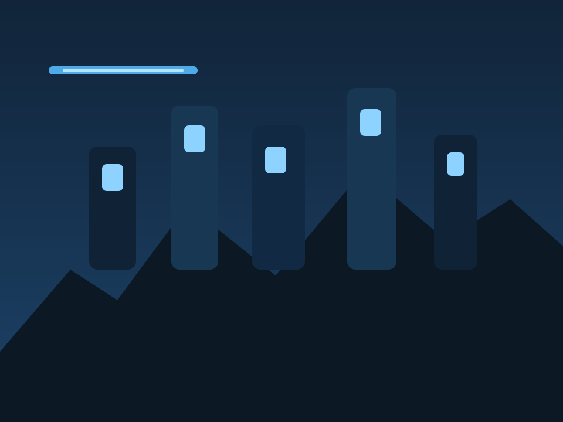

Fra idé til virkelighed
Patterno
Patterno Media Consultancy er et multimedie-rådgivningsfirma i udvikling, bygget på ambitionen om at omsætte idéer til tydelige, professionelle og brugbare digitale løsninger.
Ydelser
Multimedie-rådgivning med retning, struktur og personlig drivkraft
Professionel, kreativ og inspirerende. Patterno bygger på ønsket om at gøre viden, design og digital forståelse til et stærkt fagligt grundlag.
Konceptet tager udgangspunkt i et rådgivningsfirma, der hjælper virksomheder og organisationer med idéudvikling, visuel retning og digitale løsninger. På sigt peger retningen mod større samarbejder, tydeligere brandfortællinger og mere international kommunikation.
Proces
En trin-for-trin proces fra research til website
Progressionen går fra brief og research til moodboards, style tile, wireframes og færdig digital løsning.
Patterno skal gøre komplekse idéer konkrete. Derfor er processen bygget op i tydelige etaper: først retning og målgruppe, derefter visuel identitet og struktur, og til sidst wireframes, indhold og website. Det giver brugeren overblik og skaber tillid i hvert skridt.
Retning
Fire nedslag i Patternos arbejdsproces
De fire felter kan bruges til at vise research, moodboards, wireframes og færdige leverancer i én samlet visuel fortælling.



